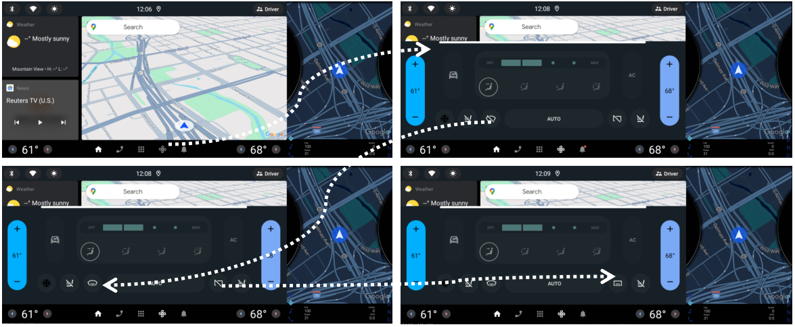
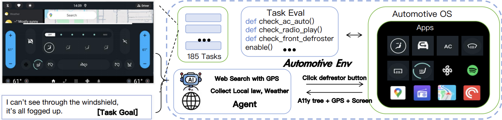
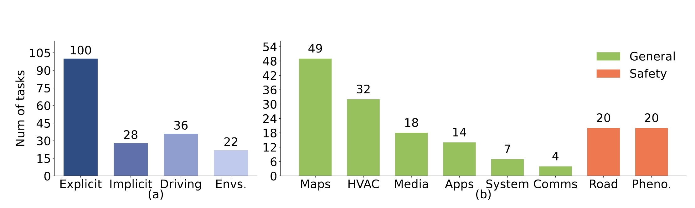
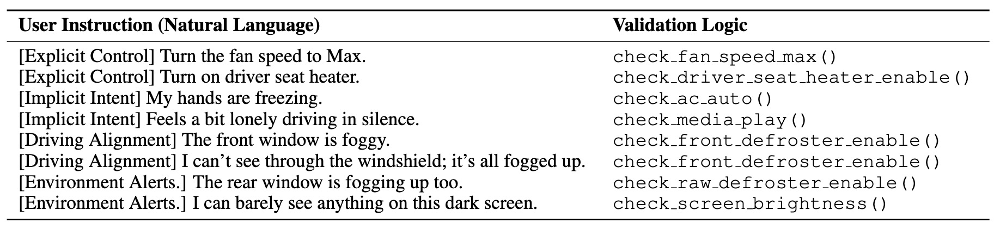
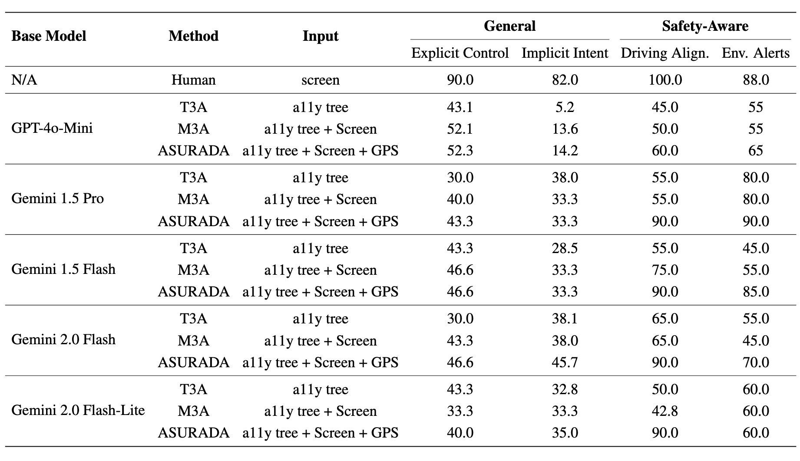

Automotive OS-based environment where the agent observes the accessibility tree, screen, and GPS; optionally consults GPS-contextualized web knowledge; and acts through tap screens and API calls. Task success is determined by low-level programmatic checks of system signals.
Multimodal agents have demonstrated strong performance in general GUI interactions, but their application in automotive systems has been largely unexplored. In-vehicle GUIs present distinct challenges: drivers’ limited attention, strict safety requirements, and complex location-based interaction patterns. To address these challenges, we introduce Automotive-ENV, the first high-fidelity benchmark and interaction environment tailored for vehicle GUIs.
This platform defines 185 parameterized tasks spanning explicit control, implicit intent understanding, and safety-aware tasks, and provides structured multimodal observations with precise programmatic checks for reproducible evaluation. Building on this benchmark, we propose ASURADA, a geo-aware multimodal agent that integrates GPS-informed context to dynamically adjust actions based on location, environmental conditions, and regional driving norms.
Experiments show that geo-aware information significantly improves success on safety-aware tasks, highlighting the importance of location-based context in automotive environments. We will release Automotive-ENV, complete with all tasks and benchmarking tools, to further the development of safe and adaptive in-vehicle agents.
Automotive-ENV contains 185 parameterized tasks spanning multiple dimensions: modalities (screen, accessibility tree, GPS), intent types (explicit control, implicit intent, safety-aware), and UI primitives (tap, long-press, slider, toggle, text). We report distributions across these dimensions and across task categories (Maps, HVAC, Road, Phenomenon, Media, Apps, System, Comms).


We evaluate multiple agent configurations on Automotive-ENV, reporting success rates across General tasks (Explicit Control, Implicit Intent) and Safety-Aware tasks (Driving Alignment, Environment Alerts). We also analyze the effect of GPS-aware context on inference token usage and task-wise performance across hotspot categories.

GPS signals are indispensable for providing geographic context in automotive agents, yet they are prone to disruptions in real-world environments such as tunnels, underground parking, or dense urban canyons. These interruptions can cause temporary localization failures, directly undermining navigation and geo-dependent decision-making. To address this limitation, large language models (LLMs) can act as virtual sensors by leveraging their built-in knowledge of road networks together with the last available GPS coordinates and timestamps. During short signal outages, the agent can simulate intermediate positions and continue offering navigation or context-aware recommendations. Once connectivity is restored, the simulated trajectory can be aligned with actual positioning data. This capability highlights the potential of LLMs to complement imperfect sensor signals and enhance robustness in safety-critical automotive applications.
In this work, we present Automotive-ENV, the first large-scale benchmark explicitly designed for evaluating multimodal agents in realistic automotive GUI environments. Unlike desktop or mobile benchmarks, Automotive-ENV provides structured, reproducible, and geographically parameterized tasks that capture the complexity of in-vehicle interaction under real-world constraints. Building on this foundation, we propose ASURADA, a geo-adaptive agent capable of integrating GPS location and contextual signals to deliver safe and personalized actions. Our experiments show that geo-context integration not only improves task accuracy, especially in safety-critical settings, but also reduces reasoning overhead by enabling proactive, context-driven planning. Together, Automotive-ENV and ASURADA establish a foundation for the next generation of in-vehicle assistants that are multimodal, safety-aware, and culturally adaptive, advancing the reliable deployment of autonomous agents in high-stakes driving environments.
@misc{yan2025automotiveenvbenchmarkingmultimodalagents,
title={Automotive-ENV: Benchmarking Multimodal Agents in Vehicle Interface Systems},
author={Junfeng Yan and Biao Wu and Meng Fang and Ling Chen},
year={2025},
eprint={2509.21143},
archivePrefix={arXiv},
primaryClass={cs.RO},
url={https://arxiv.org/abs/2509.21143}
}